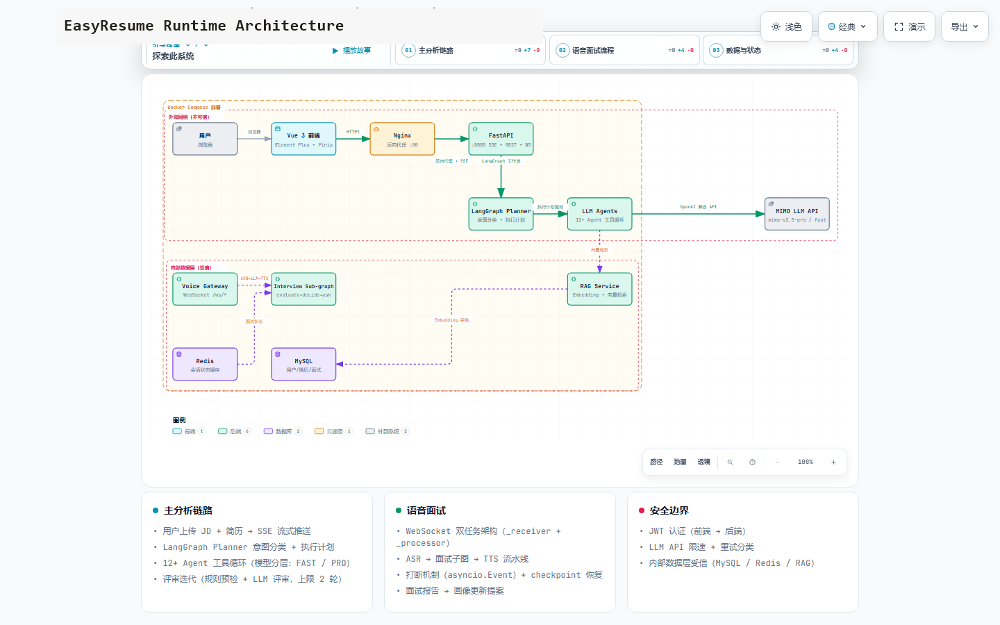

画像先于生成
所有简历、岗位分析与面试准备都读取结构化画像，避免每次重复描述同一段经历。
EasyResume 是一套以个人画像为核心的 AI 求职工作台。录入一次 JD 与简历， 即可沿“个人画像 → 简历生成 → 简历工作台 → 求职分析 → 模拟面试 → 投递记录”完成可控闭环。
星河云科技 · 杭州 · 18–24K
EasyResume 将零散的简历、JD、项目证据和面试反馈整理成结构化画像。后续每个产物都基于同一份画像生成，并保留来源、版本和用户确认记录。
所有简历、岗位分析与面试准备都读取结构化画像，避免每次重复描述同一段经历。
画像条目关联简历导入、用户填写或面试报告来源，事实、建议与归档状态清晰可查。
AI 生成的改进只形成提案，经用户确认后才写入画像；拒绝提案不会覆盖原内容。
JD 与简历录入一次，可复用于差距诊断、岗位定制、面试题生成和模拟面试。
以下界面对应项目实际路由、字段、工作流与产物。点击模块标签查看完整示例。
2026 届计算机科学与技术本科生，目标是后端开发 / 云原生方向的校园招聘岗位。
resume-demo@example.com · +86 000 0000 0000 · 浙江省杭州市
英语 CET-6 548 分，可阅读英文技术文档；普通话流利。
优先杭州、上海，可接受深圳；不考虑需要长期驻场的交付岗位。
后端开发工程师 · 2026 届
主修课程：数据结构、操作系统、计算机网络、数据库系统、分布式系统、软件工程。
完成云计算与数据密集型应用课程，以小组第一完成弹性任务调度课程项目。
语言与框架：Java、Python、Spring Boot、Vue；熟悉并发编程与 REST API 设计。
数据与中间件：MySQL 索引与事务、Redis 缓存和分布式锁、RabbitMQ 消息可靠性。
工程与云原生：Linux、Git、Docker、Kubernetes 基础、OpenTelemetry、Prometheus、Grafana。
参与统一支付网关重构，负责退款链路状态机与幂等校验；整理故障注入用例并补齐监控指标，帮助团队提前发现 3 类异常状态流转。
与前端、测试和运维协作发布 2 个迭代，沉淀接口变更与回滚文档。
设计统一指标采集与服务健康看板，为 12 个实验服务提供链路追踪、告警聚合和故障回放；采用 Kafka 异步写入与分级存储，优化后端处理线程池。
基于 Spring Boot 与 Vue 实现课程资料、作业批改和学习小组模块；使用 Redis 缓存热门资料并完成权限与审计日志设计。
实现任务打分、资源预留与失败重调度策略，完成 600 个模拟任务的调度实验并整理算法取舍报告。
习惯从问题边界、数据流和失败场景拆解任务，重视可验证结果与文档沉淀。能主动推动跨角色协作，希望在后端工程与云原生方向持续深耕。
resume-demo@example.com · +86 000 0000 0000 · 杭州
参与统一支付网关重构，负责退款链路状态机与幂等校验；整理故障注入用例并补齐监控指标，帮助团队提前发现 3 类异常状态流转。
云原生可观测实验平台 · 后端负责人
设计统一指标采集与服务健康看板，为 12 个实验服务提供链路追踪、告警聚合和故障回放；采用 Kafka 异步写入与分级存储。
校园课程协作平台 · 全栈开发
基于 Spring Boot 与 Vue 实现课程资料、作业批改和学习小组模块；使用 Redis 缓存热门资料并完成权限与审计日志设计。
负责云平台核心服务研发，参与需求分析、系统设计、编码、测试和上线，保障服务稳定性与可维护性。
Java 基础扎实，理解集合、并发和 JVM；熟悉 Spring Boot、MySQL、Redis。
具备接口设计、测试、故障排查与性能优化经验，关注线上可观测性。
了解 Kubernetes、消息队列、分布式系统，有开源或云平台项目经验。
优先补充可观测平台的容量数据与调优过程；用 STAR 结构整理支付网关故障场景；面试前复习幂等、消息可靠性和分布式锁。
设计统一指标采集与服务健康看板，支持 12 个实验服务。
围绕服务稳定性设计统一指标采集与健康看板，为 12 个实验服务提供链路追踪和故障回放。
强化岗位关键词语言与框架、数据与中间件、工程与云原生。
后端开发、数据与中间件、可观测与云原生。
按 JD 重排答题要点：业务幂等键、唯一约束、状态机、重复请求返回、异常补偿。
以退款单号作为幂等键，在数据库唯一索引和状态机约束下执行；重复请求读取首次结果，超时场景通过对账任务补偿。
答题要点：批量写入、异步队列、采样、分级存储、背压与失败重试。
将指标先写入消息队列，消费者按服务和时间窗口批量落库，对高频低价值指标做采样，同时监控队列积压并动态限流。
sess_demo_20261004_1432planner → jd_analysis → gap_analysis → resume_tailor公开静态站不连接后端、LLM、ASR、TTS、WebSocket 和数据库，因此无法进行真实语音面试、实时追问、模型评价与中断恢复。请运行 EasyResume 完整项目体验真实模拟面试。
8 轮问答 · 32 分钟 · 演示结果
| 公司 | 岗位 | 状态 | 结果 | 投递时间 | 备注 | |
|---|---|---|---|---|---|---|
| 星河云科技 | 后端开发工程师 | 面试中 | 进行中 | 2026-10-04 14:32 | 已完成技术一面 | |
| 蓝屿数据 | 云原生平台开发 | 笔试中 | 进行中 | 2026-10-02 09:18 | 10 月 8 日前完成笔试 | |
| 木棉科技 | 基础架构实习生 | 通过 | 通过 | 2026-09-28 16:45 | 已收到实习 offer | |
| 栖云智能 | Java 开发工程师 | 已投递 | 进行中 | 2026-09-25 11:20 | 官网投递 | |
| 白榆软件 | 后端研发工程师 | 未通过 | 未通过 | 2026-09-18 10:06 | 已复盘系统设计题 |
系统不把 AI 输出直接当作事实。生成结果先进入可审阅的结构化产物，用户确认后才影响下一阶段。
完整项目由 Vue 3、FastAPI、LangGraph、MySQL、Redis、WebSocket 语音网关与 OpenAI 兼容模型服务共同支撑。

JD 与简历通过 SSE 流式推进，LangGraph Planner 分类意图并生成执行计划，各能力单元按契约写入自己的状态字段。
WebSocket 语音网关串联 ASR、面试子图与 TTS，支持打断、checkpoint 恢复、稳定问题标识和证据化评价。
JWT 认证、模型调用重试分类、结构化校验，以及 MySQL / Redis / RAG 的持久化能力都在完整项目中提供。